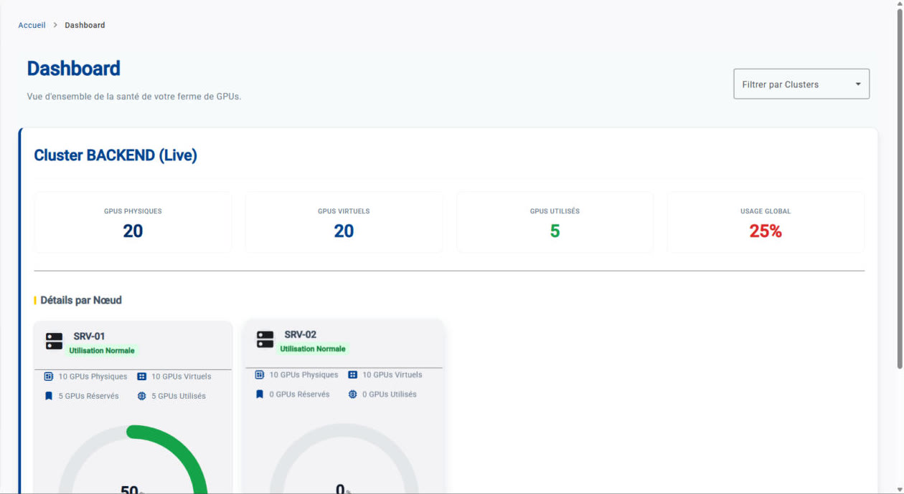
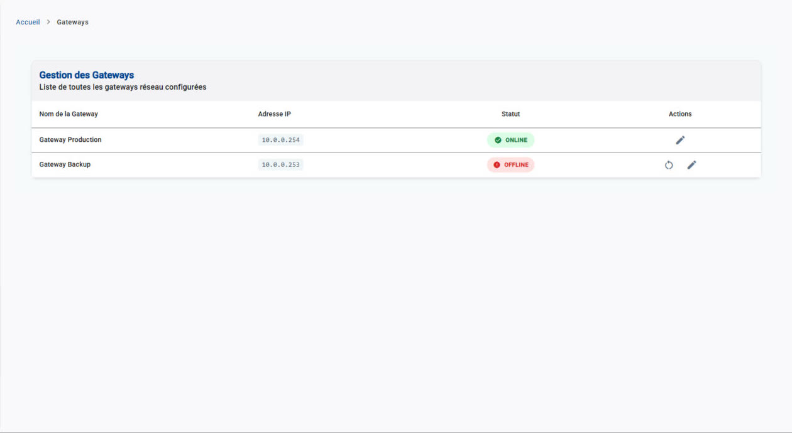
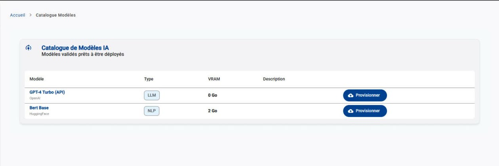
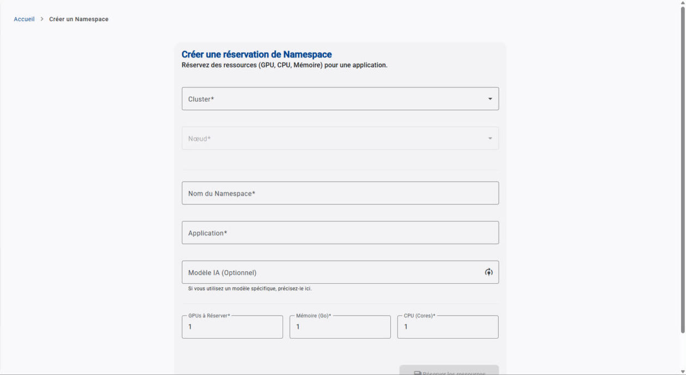

Développeur backend Python. Je conçois des API avec FastAPI, Pydantic, SQLAlchemy et Alembic. Mes projets personnels me servent à explorer le front, l'infrastructure et les jeux.
Dashboard pour suivre et réserver des ressources GPU sur plusieurs clusters, avec un rôle administrateur et un rôle utilisateur.
Captures

Tableau de bord

Passerelles réseau

Catalogue de modèles

Réservation
Problème
Suivre les GPU et les modèles, pouvoir réserver des ressources et les allouer automatiquement.
Choix techniques
Angular pour le tableau de bord.
Deux rôles, administrateur et utilisateur, pour séparer la gestion et la réservation.
Les passerelles hors ligne sont signalées et peuvent être relancées depuis l'interface.
Schéma
Utilisateur→Dashboard Angular→Clusters GPU
Fonctionnalités
Vue d'ensemble : jauges de charge GPU, mémoire et CPU pour l'ensemble des clusters connectés.
Liste des nœuds : statut en ligne ou hors ligne, propriétaire, nombre de GPU physiques et virtuels.
Réservations : formulaire (application, namespace, modèle, GPU, CPU, RAM), activation, déplacement vers un autre nœud, suppression après confirmation.
Passerelles réseau : liste des passerelles, alerte sur celles qui sont hors ligne, bouton de relance.
Ce que j'en retiens
Ce projet m'a permis de faire mes premiers pas en Python, un langage que je n'avais jamais utilisé.
Ce que je ferais différemment
Une version plus minimaliste, pour qu'elle s'intègre dans une startup. À la base, c'est un POC conçu pour de grands groupes, qui peuvent se payer des solutions qui existent déjà.
Un portail de pilotage en cours de développement, réalisé à deux. Détails sur demande.
Problème
Répondre à la demande d'un proche : un portail qui centralise les outils pour améliorer le processus de pilotage et de gestion.
Ce que j'en retiens
Les aspects juridiques liés à la création d'une suite destinée à d'autres utilisateurs.
Ce que je ferais différemment
Partir de données génériques dès le départ. J'ai commencé à développer trop vite, en m'appuyant sur des données réelles, alors qu'un jeu de données générique aurait été plus simple à tester et à partager.